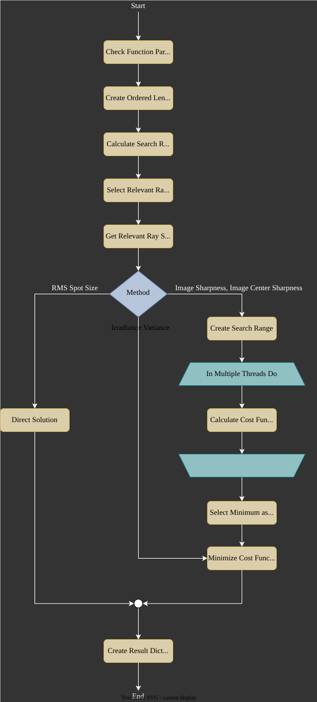

5.6. Focus Methods#
5.6.1. Procedure#
The focus_search procedure is illustrated in the following figure.
{kind=link}

Fig. 5.13 Autofocus process flowchart.#
5.6.2. RMS Spot Size#
Standard RMS
The following derivation is similar to [1]. For ray sections starting at \(x_i, y_i, z_0\) the positions at an additional \(t\) axial distance are:
We can define the RMS spot size relative to the center coordinates \(x_c^*, y_c^*\). This average position also propagates starting at \(x_c, y_c\) and having a direction vector \(s_c\). The cost function is:
With the new relative coordinates \(\Delta x_i, \Delta y_i\) and relative direction \(\Delta \theta_{x,i}, \Delta \theta_{y,i}\):
Variational calculus leads to [1]:
So the focal position is located at \(z_0 + t\).
Ray Weighted RMS
We can also include additional weights \(w_i\) for each ray, which for instance can be a ray power.
The weights are easily isolated from the rest of the expression, leading to a factor of \(w_i^2\) for all terms. This leads to a solution of:
Position Weighted RMS
Using other strictly monotonically increasing functions depending on \(r = \left(x_i^*-x_c^*\right)^2+\left(y_i^*-y_c^*\right)^2\) has no additional benefit. They all share the same position for the minimum, but could have numerical issues or could be harder to calculate.
5.6.3. Pixel Dimensions for Rendering Methods#
Methods Irradiance Variance, Image Sharpness and Image Center sharpness render multiple images \(P_z\) with pixel number \(N_\text{px} \cdot N_\text{px}\). The side length pixel number \(N_\text{px}\) is dependent on the number of rays used for focus finding. For few rays we want to keep the number low to minimize the effects of noise. For a larger amount of rays we can increase the number step by step. This is needed to resolve small structures. \(N\) rays being distributed on a square area means we need to increase \(N_\text{px}\) proportionally to \(\sqrt{N}\) to achieve a somehow constant SNR. The formula implemented has the form \(N_\text{px} = \text{offset} + \text{factor} \cdot \sqrt{N}\).
The same number of pixels is used in both image dimensions.
References